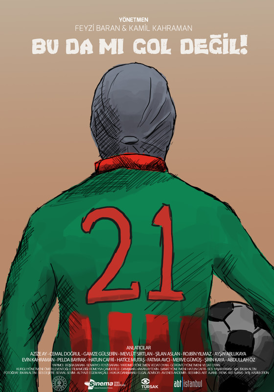
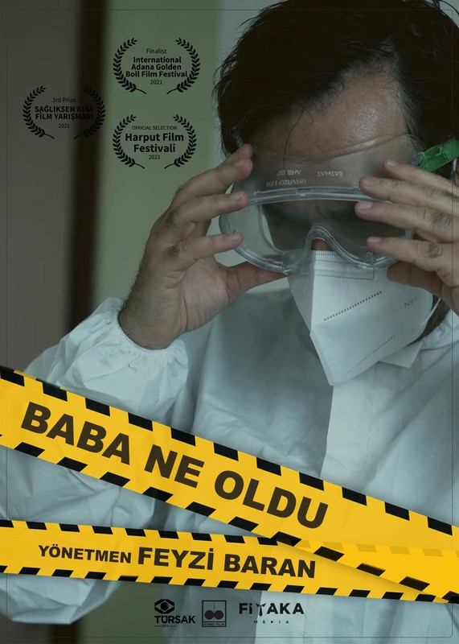
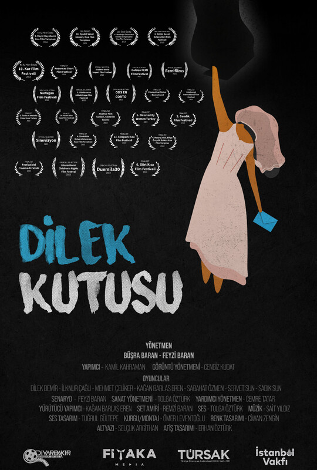
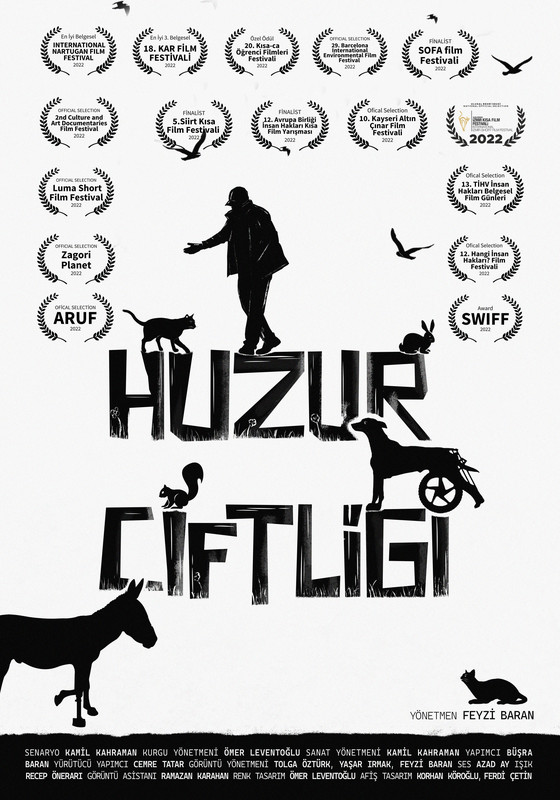
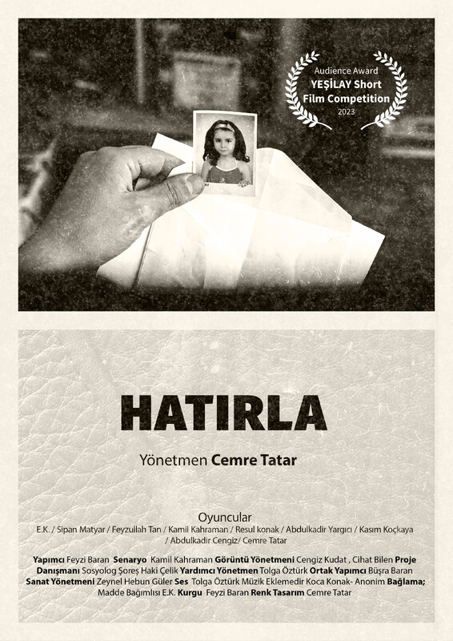
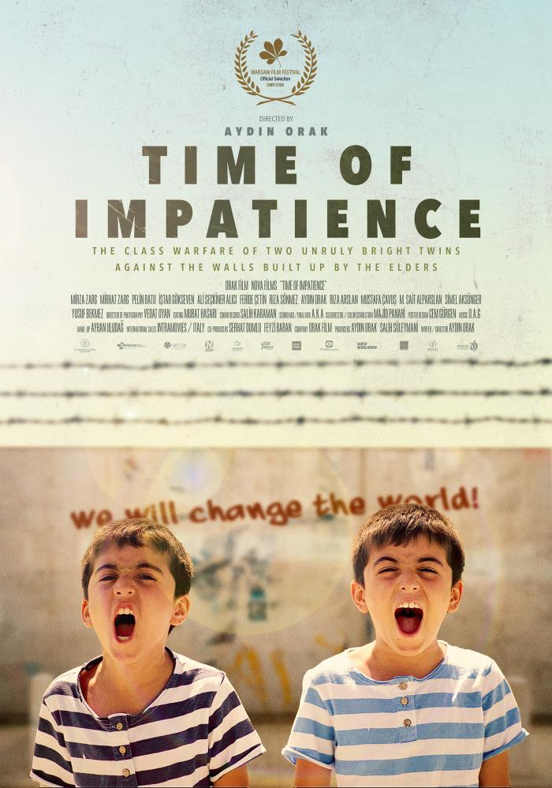
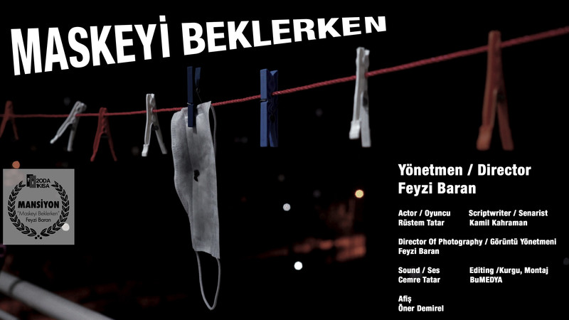
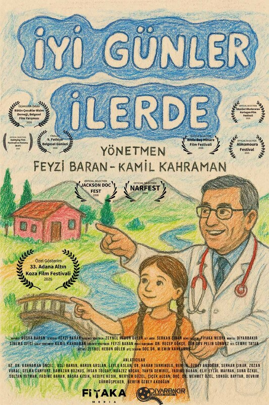

Diyarbakır merkezli olmak üzere Mardin, Batman, Siirt, Şanlıurfa, Gaziantep, Malatya, Bingöl,
Elazığ ve çevre illerdeki film, dizi, belgesel ve reklam projeleri için oyuncu ve figüran
başvuruları alıyoruz.
Deneyimli veya deneyimsiz adaylar başvurabilir. Başvuru ücretsizdir; herhangi bir projede
yer alma garantisi vermez.
02
Hakkımızda
2017'den beri
Diyarbakır’ın Hikâyelerini Dünyaya Taşıyoruz
2017 yılında bir inisiyatif olarak kurulan Diyarbakır Sinema Ofisi, daha sonra yoluna, dernek ve şehre değer katan kurumsal marka olarak devam etmektedir. sinema sanatını
Diyarbakır’ın tarihî ve kültürel mirasıyla buluşturmak, yerel hikâyeleri evrensel bir
anlatımla beyaz perdeye taşımak ve bölgedeki sinema ekosisteminin gelişimine katkıda
bulunmak amacıyla çalışmalarını sürdürmektedir.
Diyarbakır’ın binlerce yıllık tarihi, çok kültürlü yapısı, özgün mimarisi ve doğal
güzellikleri, sinema için eşsiz bir anlatım alanı sunmaktadır. Diyarbakır Sinema Ofisi,
bu zenginliği yalnızca bir çekim mekânı olarak değil, insan hikâyelerinin, toplumsal
hafızanın ve kültürel değerlerin anlatıldığı güçlü bir sinema kaynağı olarak görmektedir.
/01
Sinemaya Destek, Şehre Değer
Diyarbakır Sinema Ofisi; film, dizi ve reklam projeleri için uygun çekim mekânlarının
belirlenmesi, çekim izinleri, teknik ve lojistik destek ile yerel ve uluslararası yapım
ekiplerinin bölgedeki çalışmalarının kolaylaştırılması gibi alanlarda hizmet sunmayı
hedeflemektedir.
Bununla birlikte genç yeteneklerin keşfedilmesi, sinema eğitimlerinin desteklenmesi,
atölyeler, yönetmen buluşmaları ve kültür-sanat etkinlikleri aracılığıyla bölgedeki
sinema üretiminin güçlendirilmesi önceliklerimiz arasında yer almaktadır.
/02
Yerelden Evrensele Uzanan Hikâyeler
Diyarbakır Sinema Ofisi, sinemanın yalnızca bir sanat dalı değil, aynı zamanda
toplumsal farkındalık oluşturabilen güçlü bir iletişim aracı olduğuna inanmaktadır.
İnsan hakları, toplumsal sorunlar, çocuklar, kadınlar ve yaşamın farklı alanlarında
görünürlük kazanmayı bekleyen hikâyeler, sinema çalışmalarımızın önem verdiği konular
arasında bulunmaktadır.
Yönetmen ve yapımcı Feyzi Baran’ın sinema ve toplumsal duyarlılık eksenindeki
çalışmalarıyla da ilişkilenen bu yaklaşım, yerel hikâyelerin daha geniş kitlelere
ulaşmasını ve sinemanın toplumsal etkisinin güçlenmesini amaçlamaktadır.
/03
Diyarbakır’ı Bir Sinema Merkezi Olarak Geleceğe Taşımak
Eğil Belediyesi ile 2024 yılında imzalanan iş birliği protokolü, bölgenin tarihî ve
doğal mekânlarının film sektörüne kazandırılması yönündeki çalışmaların örneklerinden
biridir. Bu yaklaşım, Diyarbakır ve çevresinin film çekimleri, kültürel etkinlikler ve
yeni sinema projeleri açısından taşıdığı potansiyeli geliştirmeyi hedeflemektedir.
Bugüne kadar hayata geçirilen film projeleri ve festival deneyimleriyle Diyarbakır
Sinema Ofisi, şehrin kültür ve sanat alanındaki görünürlüğünü artırmaya ve yeni
üretimlere zemin hazırlamaya odaklanmaktadır.
Bizim için her film yeni bir hikâye, her hikâye yeni bir bakış açısı ve her çekim
Diyarbakır’ın dünyayla kurduğu bağın güçlenmesi demektir.
03
Hizmet Alanlarımız
01
Casting ve Oyuncu Temini
Film, dizi, reklam ve belgesel projeleri için profesyonel ve amatör oyuncuların, yardımcı oyuncuların ve figüranların belirlenmesi; casting süreçlerinin koordinasyonu ve yerel yeteneklerin yapımlarla buluşturulması.
02
Film ve Dizi Yapım Desteği
Sinema, televizyon ve dijital platform projelerinin bölgedeki çekim süreçlerinde ön hazırlık, saha koordinasyonu, yerel bağlantılar ve organizasyon ihtiyaçlarına yönelik destek sağlanması.
03
Çekim Mekânları ve Lokasyon Desteği
Diyarbakır ve çevre illerdeki tarihî, kültürel, doğal ve modern çekim mekânlarının araştırılması, yapımlara uygun lokasyonların önerilmesi ve keşif süreçlerinin desteklenmesi.
04
Teknik Ekip ve Prodüksiyon Hizmetleri
Görüntü yönetmeni, kameraman, ışık, ses, sanat yönetimi, makyaj, kostüm ve diğer teknik alanlarda görev yapan bölgesel sektör profesyonelleriyle yapım ekiplerinin buluşturulması.
05
Prodüksiyon, Konaklama ve Lojistik Destek
Diyarbakır Sinema Ofisi, bölgede gerçekleştirilen film, dizi, reklam ve belgesel
çekimlerinde yapım şirketlerinin ihtiyaç duyduğu organizasyon süreçlerine destek sağlar.
Catering ve set yemeklerinden otel ve konaklama organizasyonlarına, ulaşım ve araç
temininden teknik ekipman ihtiyaçlarına kadar yerel işletmelerle yapım şirketleri
arasında köprü görevi üstlenir.
Çekim ekiplerinin bölgedeki ihtiyaçlarının hızlı ve koordineli şekilde karşılanmasına
yardımcı olarak yapım süreçlerinin daha verimli ilerlemesine katkı sunar.
Bu hizmetin kapsamı
KonaklamaOteller ve konaklama tesisleriyle yapım şirketleri arasında koordinasyon.
Catering ve yemekSet yemekleri, kumanya ve yemek organizasyonları.
UlaşımOyuncu ve ekip transferleri, servis araçları ve araç kiralama.
EkipmanKamera, ışık, ses ve diğer teknik ekipmanların temini için yerel bağlantılar.
Yerel tedarikSet kurulumu, dekor, kostüm ve diğer prodüksiyon ihtiyaçlarına yönelik işletmelerle bağlantı.
Saha koordinasyonuÇekimler sırasında ortaya çıkan günlük ihtiyaçların karşılanmasına yönelik organizasyon desteği.
06
Sinema Etkinlikleri ve Sektörel İş Birlikleri
Film festivalleri, gösterimler, söyleşiler, atölyeler ve sektörel buluşmalar aracılığıyla bölgedeki sinema kültürünün gelişmesine, yeni yeteneklerin desteklenmesine ve ulusal ve uluslararası iş birliklerinin güçlendirilmesine katkı sağlanması.
04
Projeler

2020 · Belgesel
Feyzi Baran & Kamil Kahraman
4. Bingöl Uluslararası Kısa Film Festivali, Kısa Film Yarışması, Üçüncülük Ödülü. 2022
6. Türk Dünyası Belgesel Film Festivali, Öğrenci Belgesel Film Yarışması, Birincilik Ödülü. 2021
71. Berlin Film Festivali, Avrupa Film Pazarı, Türkiye Kataloğu. 2021
Avrupa Film Pazarı, 74. Cannes Film Festivali, Film Market, Türk Filmleri Kataloğu. 2021
4. AFSAD Kısa Film Festivali, Belgesel Yarışması, Finalist. 2021
9. Hak-İş Kısa Film Yarışması, Ulusal Kategori, Onunculuk Ödülü. 2020
8. Antakya Altın Defne Film Festivali, Ulusal Belgesel Film Yarışması, Finalist. 2020
2. Erzincan Uluslararası Kısa Film Festivali, Finalist. 2020
8. Boğaziçi Film Festivali, Ulusal Kısa Belgesel Film Yarışması, Finalist. 2020
10. Avrupa Birliği İnsan Hakları Kısa Film Yarışması, İnsan Hakları Dalı, Finalist. 2020
11. TİHV İnsan Hakları Belgesel Film Günleri, Gösterim Seçkisi. 2020
23. Randevu İstanbul Film Festivali, Geleceğin Sinemacılarından Kısalar Bölümü, Gösterim Seçkisi. 2020
41. İFSAK Kısa Film ve Belgesel Yarışması, Belgesel Dalı, Finalist. 2021
16. İşçi Filmleri Festivali, Gösterim Seçkisi. 2021
1. Harput Kısa Film Festivali, Belgesel Film Yarışması, Finalist. 2021
1. Kültür Sanat Belgeselleri Film Festivali, Belgesel Film Yarışması, Finalist. 2021
32. Ankara Film Festivali, Ulusal Belgesel Film Yarışması, Finalist. 2021
7. Contact Uluslararası Öğrenci Filmleri Festivali, Kısa Film Yarışması, Finalist. 2021
9. Kayseri Film Festivali, Ulusal Belgesel Film Yarışması, Finalist. 2021
22. İzmir Kısa Film Festivali, Panorama Bölümü, Gösterim Seçkisi. 2021
1. İstanbul Nartugan Film Festivali, Finalist ve Gösterim Seçkisi. 2021
12. Sinepark Kısa Film Festivali, Çarpışan Aramalar Dalı, Finalist. 2022
13. TRT Belgesel Film Yarışması, Ulusal Öğrenci Belgesel Yarışması, Finalist. 2022
22. Frankfurt Türk Film Festivali, Belgesel Film Yarışması, Finalist. 2022
1. Ayancık Film Festivali, Belgesel Film Yarışması, Finalist. 2022
13. Balkans Beyond Borders Kısa Film Festivali, Kısa Film Yarışması, Finalist. 2022
Hacettepe Üniversitesi İletişim Fakültesi Belgesel Günleri, Gösterim Seçkisi. 2022
4. Rotary 2420. Bölge Örsçelik Balkan Kısa Film Yarışması, Finalist. 2023
Anahtar Film Günleri, Gösterim Seçkisi. 2023
1. İstanbul Spor Film Festivali, Belgesel Film Dalı, Finalist. 2025
7. Bingöl Uluslararası Kısa Film Festivali, Özel Gösterim Seçkisi. 2025

2021 · Belgesel
Feyzi Baran
28. Adana Altın Koza Film Festivali, Ulusal Kısa Film Yarışması, Belgesel Dalı, Finalist. 2021
32. Ankara Film Festivali, Ulusal Belgesel Film Yarışması, Finalist. 2021
9. SETEM İpekyolu Film Ödülleri, Ulusal Belgesel Film Yarışması, Finalist. 2021
1. Harput Kısa Film Festivali, Gösterim Seçkisi. 2021

2023 · Belgesel
Büşra Baran & Feyzi Baran
6. Bingöl Uluslararası Kısa Film Festivali, İkincilik Ödülü. 2024
7. Siirt Kısa Film Festivali, Kısa Film Yarışması, İkincilik Ödülü. 2024
2. Mardin Film Festivali, Kısa Film Yarışması, Birincilik Ödülü. 2024
6. Esaretten Cesarete Kısa Film Yarışması, Belgesel Dalı, En İyi Film Ödülü. 2024
2. Rotary Barış Filmleri Festivali, Öğrenci Belgesel Kategorisi, En İyi Film Ödülü. 2024
19. Kar Film Festivali, Belgesel Dalı, Birincilik Ödülü. 2024
10. EgeArt Sanat Günleri, Kısa Film Yarışması, Belgesel Dalı, İkincilik Ödülü. 2023
1. Büyüt Hayallerini Kısa Film Yarışması, Birincilik Ödülü. 2023
3. Yakın Doğu Üniversitesi Sinema Sempozyumu Kısa Film Yarışması, Belgesel Dalı, Jüri Özel Ödülü. 2023
15. Rotary Kısa Film Festivali, Belgesel Dalı, Birincilik Ödülü. 2023
3. Kültür Sanat Belgeselleri Film Festivali, Belgesel Film Yarışması, Özgün Yapım Tasarımı Ödülü. 2023
4. Rotary 2420. Bölge Örsçelik Balkan Kısa Film Yarışması, Finalist. 2023
13. Sinepark Kısa Film Festivali, Çarpışan Aramalar Dalı, Finalist. 2023
4. Sinekültür Üniversitelerarası Kısa Film Yarışması, Belgesel Dalı, Finalist. 2023
2. Gemlik Film Festivali, Kısa Film Yarışması, Finalist. 2023
5. Directed By Women Turkey, Uluslararası Belgesel Film Yarışması, Finalist. 2023
8. Filmamed Belgesel Film Festivali, Gösterim Seçkisi. 2023
Anahtar Film Günleri, Gösterim Seçkisi. 2023
30. Adana Altın Koza Film Festivali, Öğrenci Kısa Film Yarışması, Belgesel Dalı, Finalist. 2023
5. Taste of Anatolia Films from Turkey, İngiltere, Gösterim Seçkisi. 2023
6. Siirt Kısa Film Festivali, Kısa Film Yarışması, Finalist. 2023
6. Esaretten Cesarete Kısa Film Yarışması, Yarışma Filmi. 2024
12. Bursa Çocuk Hakları Film Festivali, Yetişkinler Gözünden Çocuk Hakları Bölümü, Gösterim Seçkisi. 2024
3. Diyarbakır Kısa Film Festivali, Belgesel Dalı, Finalist. 2024
6. Dostluk Kısa Film Festivali, Kırk Yıllık Hatır Gösterim Seçkisi. 2024
Anahtar Film Günleri, Gösterim Seçkisi. 2024
1. KASTOB Kısa Film Yarışması, Finalist. 2024
5. Aizanoi Kısa Film Festivali, Kamera Eşitliğe Dönsün Yarışması, Finalist. 2025
4. Büyük Taarruz Kısa Film Festivali, Kısa Film Yarışması, Finalist. 2025
19. JCI İstanbul Crossroads Kısa Film Yarışması, Finalist. 2025
Esaretten Cesarete Kısa Film Yarışması, Ödüllü Film Gösterim Seçkisi. 29 Mart 2026

2022 · Belgesel
Feyzi Baran
1. Dicle Belgesel ve Kısa Film Festivali, Dicle Üniversitesi Özel Ödülü. 2023
2. İstanbul Nartugan Film Festivali, Ulusal Kısa Belgesel Film Yarışması, En İyi Film Ödülü. 2022
18. Kar Film Festivali, Belgesel Film Yarışması, Üçüncülük Ödülü. 2022
20. Kısa-ca Öğrenci Filmleri Festivali, Ulusal Belgesel Dalı, Kemal Öner Özel Ödülü. 2022
2. Kültür Sanat Belgeselleri Film Festivali, Belgesel Film Yarışması, Finalist. 2022
1. Luma Kısa Film Festivali, Kısa Film Yarışması, Finalist. 2022
5. Siirt Kısa Film Festivali, Kısa Film Yarışması, Finalist. 2022
23. İzmir Kısa Film Festivali, Panorama Bölümü, Gösterim Seçkisi. 2022
12. Avrupa Birliği İnsan Hakları Kısa Film Yarışması, İklim Değişikliği Kategorisi, Finalist. 2022
10. Kayseri Altın Çınar Film Festivali, Özel Gösterim Seçkisi. 2022
13. TİHV İnsan Hakları Belgesel Film Günleri, Gösterim Seçkisi. 2022
12. Hangi İnsan Hakları? Film Festivali, Ulusal Program, Gösterim Seçkisi. 2022
15. Rotary Kısa Film Festivali, Belgesel Dalı, Finalist. 2023
2. TAYF Uluslararası Kısa Film Festivali, Yarışma Dışı Gösterim Seçkisi. 2023
13. Sinepark Kısa Film Festivali, Çarpışan Aramalar Dalı, Finalist. 2023
18. İşçi Filmleri Festivali, Gösterim Seçkisi. 2023
16. Documentarist İstanbul Belgesel Günleri, Başka Dünya Yok Bölümü, Gösterim Seçkisi. 2023
16. Documentarist İstanbul Belgesel Günleri, Türkiye Panorama Bölümü, Gösterim Seçkisi. 2023
Avrupa Film Pazarı, 72. Berlin Film Festivali, Film Market, Türk Sineması Kataloğu Seçkisi. 2023

2023 · Kurmaca
Cemre Tatar
1. Bursa Teknik Üniversitesi, Kısa Film Yarışması, Finalist. 2023
7. Siirt Kısa Film Festivali, Kısa Film Yarışması, Finalist. 2024

2020 · Uzun Metraj
Aydın Orak

2020 · Kurmaca
Feyzi Baran
1. Mutlu Kısa Film Günleri, Kısa Film Yarışması, Üçüncülük Ödülü. 2022
1. İki Oda Bir Kısa - Evde Kısa Film Yarışması, 10. Film, Mansiyon Ödülü. 2020
1. BEGEP Ulusal Kısa Film Yarışması, Yarışma Filmi. 2020

2025 · Belgesel
Feyzi Baran & Kamil Kahraman
1. Bütün Çocuklar Bizim Derneği, Belgesel Film Yarışması, Üçüncülük Ödülü. 2026